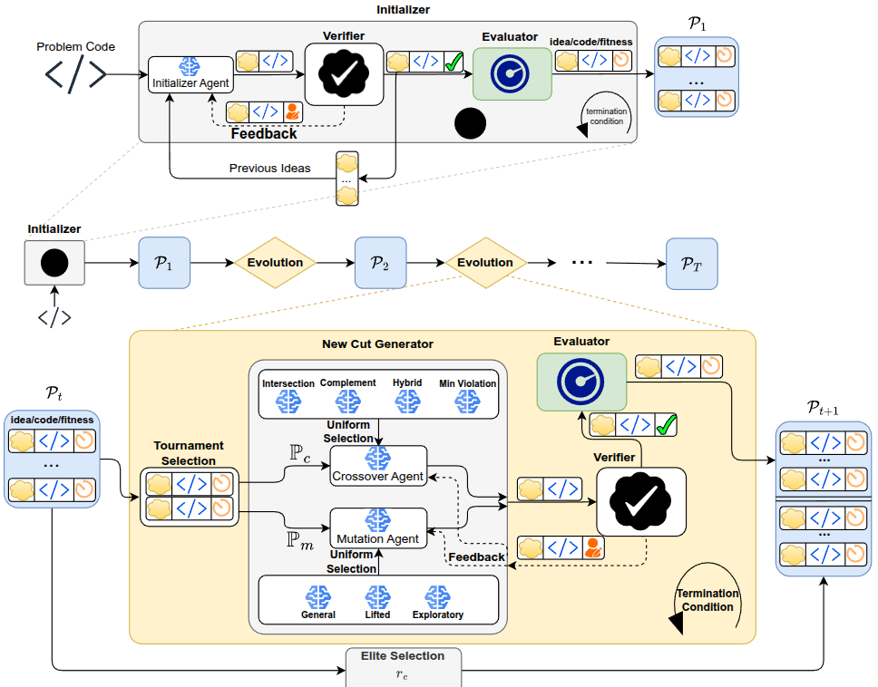

EvoCut: Strengthening Integer Programs via Evolution-Guided Language Models
Abstract
EvoCut automates the generation of acceleration cuts for mixed-integer optimization by coupling an LLM with an evolutionary search: (i) initialize a diverse population of candidate cuts; (ii) test each cut for feasibility/optimal-solution preservation and pruning power; and (iii) evolve the population via crossover and mutation.
See the paper for full details and results. Reported figures below mirror the arXiv manuscript. [arXiv]
Method Overview
1) Initialize
An LLM-based initializer proposes a diverse set of candidate cuts tailored to an instance class.
2) Verify
Each cut is empirically checked for optimal-solution preservation and its ability to eliminate fractional solutions on a verification set.
3) Evolve
Evolutionary operators (crossover & mutation) refine candidates across iterations, guided by utility signals like optimality-gap reduction.
Flow diagram
High-level schematic of EvoCut's phases.
Appendix — IMO 2025 Problem 6 (Rectangular tiling with one hole per row & column)
Problem (informal). On an n × n grid, place axis-aligned rectangular tiles (no overlaps) so that each row and each column has exactly one uncovered unit square (“hole”). Minimize the number of tiles.
Why this bound? Very briefly: label the n holes as a permutation of rows vs. columns, take a longest increasing subsequence (LIS) of length a and a longest decreasing subsequence (LDS) of length b; Erdős-Szekeres implies ab ≥ n, giving a counting lower bound near n + 2√n. For n = k² there is a matching construction with (k−1)² interior k×k tiles plus 4(k−1) boundary tiles, totaling k² + 2k − 3. See the notes for the exact details and figures. [Solution notes]
This benchmark appears in our paper’s appendix as “Rectangular Tiling with One Hole per Row and Column (IMO 2025 P6)” and is modeled with a compact 2D interval-flow MILP. See Appendix F.5 and H/G for definitions and experiment sizes. [Paper PDF]
Get Started
Install
# (Optional) create a virtual environment
python -m venv .venv
source .venv/bin/activate # Windows: .venv\Scripts\activate
# Install dependencies
pip install -r requirements.txt
Python 3.9+ recommended. Requires a MILP solver (e.g., Gurobi) and filling config templates.
Configure
# Make copies of *_template files in configs/
# Rename them (remove "_template") and fill credentials & hyperparameters
Run EvoCut
# Train / generate cuts for your instances
python src/main.py <args>
# See all options
python src/main.py -h
Evaluate & Verify
# Optimal Solution Preservation (OSP)
python experiments/OSP_cuts.py <args>
# Evaluate on held-out instances
python experiments/evaluate_cut.py <args>
For the latest CLI flags and examples, see the repository README.
Citation
Cite the paper as:
@article{yazdani2025evocut,
title={EvoCut: Strengthening Integer Programs via Evolution-Guided Language Models},
author={Yazdani, Milad and Mostajabdaveh, Mahdi and Aref, Samin and Zhou, Zirui},
journal={arXiv preprint arXiv:2508.11850},
year={2025},
doi = {10.48550/arXiv.2508.11850}
}Also available on Hugging Face Papers.
Resources
Paper
arXiv abstract · PDF · DOI: 10.48550/arXiv.2508.11850
Hugging Face
Issues / Questions
Open an issue on the repository if you encounter problems or have feature requests.